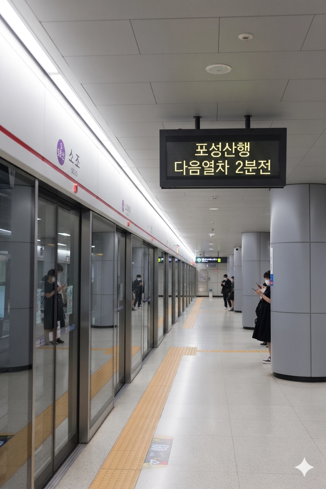

- 1. 개요
- 2. 역 정보 및 특징
- 3. 역 주변 정보
- 3.1. 출구 정보
- 3.2. 주요 인접 시설 상세
- 4. 일평균 이용객
- 5. 승강장
- 5.1. 5호선 (지하 3층)
- 5.2. 창전선 (지상 2층, 예정)
- 6. 연계 교통
- 7. 여담 (소조역 7대 미스터리 & 밈)
1. 개요
효빈 도시철도 5호선 505번 및 미개통 노선인 창전선 C20번(예정). 효빈광역시 북구 소조동 912 소재.
현재는 붉은색(#EE0022) 5호선의 주력 역으로 영업 중이며, 향후 하늘색(#33AAFF) 과좌식 모노레일인 창전선 2단계 구간(덕현중앙~시청)이 개통되면 지상 2층과 지하 3층을 오가는 수직 환승 거점역이 될 예정이다. 5호선은 지하 깊숙이 뚫려 있고, 창전선은 상공을 가로지르는 고가로 설계되어 있어 입체적인 역사가 탄생할 전망이다.
한자 표기가 소조(小鳥), 즉 '작은 새'라는 뜻이라 일본어로 읽으면 코토리가 되기 때문에, 《러브라이브!》 팬덤 사이에서는 미나미 코토리의 전설적인 성지로 통한다. 역 대합실에서 짹짹 소리가 환청으로 들린다는 괴담이 있다.
2. 역 정보 및 특징
효빈광역시 북구 소조동의 정중앙에 위치하여, 교육 시설, 공공 기관, 그리고 상업·주거 지역이 완벽하게 맞물린 역이다.
역사 남쪽으로는 지역 최고 명문인 효빈대학교(사회과학대학, 사회복지학대학 측 후문)와 효빈교육대학교가 나란히 붙어 있어 학기 중에는 대학생들이 끝없이 쏟아져 나온다. 특히 효빈대 사회복지정책학과 출신인 박효빈 시장이 학창 시절 매일같이 오가던 '청춘의 관문'으로도 유명하다.
또한, 역 5번 출구 바로 앞에는 효빈시 최대 규모를 자랑하는 효빈광역시립시민도서관과 효빈 북부 새빛 점자도서관이 위치해 있어 공무원 시험 및 임용고시를 준비하는 고시생들의 베이스캠프 역할을 한다. 이 외에도 반경 500m 이내에 한국장학재단 효빈센터, 효빈지방식품의약품안전청, 소조 문화의집, 소하 비전 센터 등 알짜배기 관공서와 복지 시설들이 몰려 있어, 5호선 전체에서도 손꼽히는 막강한 유동인구 방어력을 자랑한다. 역사 지하 1층에는 효빈교통공사 공식 굿즈샵 본점이 입점해 있어 철도 동호인들의 지갑을 탈탈 털어가는 마굴이기도 하다.
3. 역 주변 정보
3.1. 출구 정보
  소조역 출구 정보
소조역 출구 정보
|
||
|---|---|---|
| 번호 | 주요 시설 및 방향 | 비고 |
| 1 | 효빈대학교 사회과학대학 (6호관), 언어문학대학 (10호관), 효빈대학교 캠퍼스 후문 방면 | 효빈대 후문(인문/사회) |
| 2 | 효빈대학교 종합사회복지관 (소조동 109), 효빈대 사회복지학대학 (7-1호관), 소조 문화의집 | 박효빈 시장 통학 루트 |
| 3 | 소조역 중앙하이츠 (대단지 아파트), 소조동 주택가 남측 | 주거 지역 |
| 4 | 소조 호반베르디움, 청능대현아파트 남측, 소조어린이공원 | |
| 5 | 효빈광역시립시민도서관 (소조동 462), 효빈 북부 새빛 점자도서관 (소조동 101), 효빈대학교 방도도서관 북측 연결로 | 도서관·고시생 밀집 구역 |
| 6 | 한국장학재단 효빈센터, 효빈지방식품의약품안전청, 효빈대 세상관, 관공서 타운 | 공공기관 밀집 구역 |
| 7 | 소조파출소, 소하(Soha) 비전 센터, 빈스마트 소조점(SSM) (288m), 소조상업지구 1번가 | 치안 및 상업 지구 |
| 8 | 효빈교육대학교, 소조2 아파트, 천왕사동 방면 교차로 | 교대 정문 방면 |
| 9 | 소조동행정복지센터, 청능초등학교, 청능대현아파트 북측 | 행정/학군 |
3.2. 주요 인접 시설 상세
공공도서관 타운 (5번 출구)
5번 출구 앞은 사실상 효빈 북구의 두뇌 코어 구역이다. 거대한 효빈광역시립시민도서관(소조동 462)이 떡하니 버티고 있으며, 바로 옆 골목에는 효빈 북부 새빛 점자도서관(소조동 101)이 자리 잡고 있어 시각장애인들의 소중한 지식 창구 역할을 한다. 도서관이 워낙 크다 보니 점심시간만 되면 지하 구내식당 메뉴표를 찍어가는 대학생들과 재야의 고시 낭인(?)들이 한데 뒤엉키는 진풍경이 벌어진다.
공공기관 및 치안 시설 (6, 7번 출구)
6번 출구 앞 관공서 타운에는 한국장학재단 효빈센터와 효빈지방식품의약품안전청이 나란히 입주해 있다. 학기 초만 되면 학자금 대출 서류를 들고 장학재단을 뛰어다니는 대학생들로 골목이 메어 터진다. 반대편 7번 출구 쪽에는 소조파출소가 든든하게 역 주변 치안을 담당하며, 288m 거리에 빈스마트 소조점(SSM)이 있어 학생들의 야식과 생필품 공급을 책임진다.
사회복지 및 청소년 시설 (2번 출구)
2번 출구 방면 소조동 109번지 일대는 복지 인프라의 성지다. 효빈대학교 종합사회복지관과 소조 문화의집이 거대한 복합 단지를 이루고 있으며, 그 옆으로 소하(Soha) 비전 센터가 들어서 있어 지역 청소년 및 취약계층의 든든한 울타리가 되어주고 있다. 사회복지학대학 학생들이 실습 점수를 채우기 위해 눈에 불을 켜고 봉사활동을 다니는 곳이기도 하다.
4. 일평균 이용객
|
소조역 이용객 통계
| ||
|---|---|---|
| 연도 | 일평균 이용객 | 비고 |
| 2020년 | 12,534명 | 코로나19 비대면 수업 여파 |
| 2021년 | 12,675명 | |
| 2022년 | 19,851명 | 대면 수업 전면 재개 + 빈스마트 입점 특수 |
| 2023년 | 21,199명 | 도서관 및 복지관 리뉴얼로 상시 유동인구 증가 |
| 2024년 | 21,123명 | 2.1만 명대 안정권. |
5. 승강장

5.1. 5호선 (지하 3층)
복선 상대식 승강장이며 스크린도어가 설치되어 있다. 5호선 공식 마스코트 **미소하**(20세, 대학생)의 단아한 안내방송이 흘러나오는 역이다.
| 당 선 ↑ | |||
| 하행 | ㅣ | ㅣ | 상행 |
| ↓ 고속버스터미널 | |||
| 상행 |
효빈 도시철도 5호선 |
당선 · 청덕공원 방면 |
| 하행 |
효빈 도시철도 5호선 |
고속버스터미널 · 효빈역 · 포성산 방면 |
5.2. 창전선 (지상 2층, 예정)
※ 창전선 **급행 열차**는 이 역에 정차하지 않고 통과할 예정이다.
| 효빈대병원 ↑ | |||
| 상행 | ㅣ | ㅣ | 하행 |
| ↓ 청 능 | |||
| 상행 |
창전선 (예정)
|
효빈대병원 · 사능 · 효빈역 · 팔조 방면 |
| 하행 |
창전선 (예정)
|
청능 · 시청 · 고송강변 · 토모리해수욕장 방면 |
6. 연계 교통
효빈광역시 시내버스 노선들이 주로 정차한다. 대학생 및 관공서 민원인 수요가 겹쳐 아침 8~9시에는 버스가 터져나간다.
| 구분 | 정류소명 | 노선 번호 |
|---|---|---|
| 순방향 | 소조역 (7번출구앞) | [급행] 19, 26 | [간선] 10, 123, 143, 172, 261, 292 | [광역] 6000, 6666 | [공항] A02 |
| 역방향 | 소조역 (건너편) | [급행] 91, 62 | [간선] 10-1, 213, 413, 712, 621, 922 | [광역] 6000R, 6666R | [공항] A02R |
7. 여담 (소조역 7대 미스터리 & 밈)
7.1. 츙츙(•8•)! '코토리'와 작은 새가 날아드는 5호선 성지
역명인 소조(小鳥)는 글자 그대로 '작은 새'라는 뜻이다. 이를 일본식으로 훈독하면 코토리가 되기 때문에, 《러브라이브!》의 전설적인 의상 요정 미나미 코토리의 공식 성지로 완벽하게 굳어졌다. 5호선 개통 초기부터 팬들은 이 역을 "코토리 역"이라 부르며, 역 외부 폴사인 앞에서 코토리의 트레이드 마크인 (•8•) 표정을 짓고 양손을 머리 위로 올린 채 인증샷을 찍는 것이 국룰로 통한다. 가끔 역무원이 지나가다 이 포즈를 보면 흠칫 놀란다.
특히 역 지하 1층 대합실 한구석에는 팬들이 자발적으로 모아둔 소규모 '제단'이 있었는데, 처음에는 역무원들이 치우려다 팬들이 너무 질서정연하게 청소까지 해놓고 가는 바람에 결국 공식 포토존 비스무리하게 남겨두었다고 한다. 역 근처 카페(7번 출구 앞)에서는 사장님이 눈치 빠르게 "소조역 한정 츙츙 치즈케이크(코토리 최애 간식)"를 출시해 매일 낮 12시만 되면 빵지순례객들로 인해 매진 사태가 벌어진다. 심지어 승강장 기둥 어딘가에 손톱만 한 알파카 스티커가 붙어있다는 괴담까지 돌며 이를 찾는 오타쿠들의 발걸음이 끊이지 않는다.
7.2. 효빈대 사회복지학과의 '관문'과 미소하 추적기
이 역 2번 출구는 효빈대학교 사회과학대학과 사회복지학대학(7-1호관)으로 가는 가장 빠른 직통 관문이다. 효빈대역(2호선)에서 내리면 정문부터 거대한 평원을 한참 걸어 올라와야 하지만, 소조역에서 내리면 단 5분 컷이다. 즉, 현재 효빈시장인 박효빈이 대학 시절 매일같이 이 역을 거쳐 등교했다는 뜻이며, 그의 직속 후배들도 현재 매일 아침 이 출구에서 좀비처럼 쏟아져 나온다.
여기에 더해, 5호선 공식 마스코트 캐릭터인 미소하(20세, 다정다감한 1학년 대학생 콘셉트)의 자취방이 소조역 3번 출구 쪽 중앙하이츠 원룸촌 어딘가라는 팬덤의 강력한 동인 설정이 붙어버렸다. 팬들은 미소하가 공강 시간에 빨간 5호선 유니폼 리본을 매고 소조역 역무실에 들러 "오늘 열차 인버터 구동음은 부드러운가요?"라고 묻고 다닐 것이라며 망상을 폭발시킨다. 실제로 작년 할로윈 데이에는 한 팬이 미소하 코스프레를 하고 2번 출구 계단에서 후배들에게 캔디를 나눠주어 효빈대 에브리타임 실시간 베스트를 장악한 전설적인 해프닝도 있었다.
7.3. 도서관 전쟁: 시립시민도서관 vs 대학도서관 vs 점자도서관
5번 출구를 나오면 효빈시 최대 규모의 효빈광역시립시민도서관(소조동 462)이 거대한 콘크리트 성벽처럼 서 있다. 문제는 이 도서관 바로 뒤편이 효빈대학교 방도도서관(이공계/예체능계 도서관) 연결로라는 점이다. 시험 기간만 되면 시민도서관 열람실 자리를 차지하려는 공시생들과, 방도도서관 자리를 놓치고 넘어온 효빈대 학생들, 그리고 길 건너 효빈교육대학교에서 임용고시를 준비하러 원정 온 교대생들까지 삼파전이 벌어지는 이른바 '소조 춘추전국시대'가 열린다.
게다가 시민도서관 바로 옆 골목(소조동 101)에는 시각장애인들을 위한 빛이자 지식의 보고인 효빈 북부 새빛 점자도서관이 위치해 있다. 소조역 스크린도어 점자 스티커나 역사 내 시각장애인 유도 블록이 효빈시에서 가장 깨끗하고 완벽하게 관리되는 이유도 바로 이 점자도서관 이용객들이 매일같이 역을 거쳐 가기 때문이다. 대학생들이 자발적으로 점자 도서 타이핑 봉사활동에 참여하기 위해 소조역 5번 출구로 줄을 서는 훈훈한 광경도 자주 목격된다.
7.4. 빈스마트 소조점과 '소하(Soha)' 비전 센터의 기묘한 콜라보
역 7번 출구에서 288m 떨어진 골목 초입에는 지역 1위 유통업체 효덕유통의 SSM 버전인 빈스마트 소조점이 쨍한 보라색 간판을 달고 영업 중이다. 그런데 우연의 일치인지 그 근처에 취약계층 아동을 지원하는 소하(Soha) 비전 센터가 자리 잡고 있다. '소하'라는 발음이 5호선 마스코트 '미소하'의 이름과 비슷하다는 사실을 캐치한 빈스마트 명예 마케팅 본부장 마루빈이 이를 놓치지 않고 "소하 센터 아동들을 위한 미소하 치즈빵 1+1 기부 행사"를 기획해 버렸다.
덕분에 오타쿠들은 빵을 사면 자동으로 센터에 하나가 기부된다는 소식에 오픈런을 뛰어 매대를 털어버렸고, 소하 비전 센터의 아이들은 매일 아침 빈스마트 트럭이 배달해 주는 간식을 먹으며 5호선 로고가 박힌 스티커를 모으는 진풍경이 벌어졌다. 이것이 효빈식 자본주의와 복지의 융합이다.
7.5. 소조 문화의집: 예비 교사들과 고등학생들의 밴드 대결장
2번 출구 앞 효빈대학교 종합사회복지관(소조동 109) 바로 옆에는 청소년 전용 공간인 소조 문화의집이 붙어 있다. 겉보기엔 평범한 복지 시설 같지만, 지하 1층 밴드 연습실은 주말마다 고등학생 록 밴드들과 효빈교육대학교 예비 교사 밴드 동아리가 연습실 대관을 놓고 멱살(?)을 잡는 성지다.
효빈시 교육감의 '애니메이션 융합 교육(A-Edu)' 정책 탓에, 교대생들이 임용고시 가산점을 받기 위해 《BanG Dream! It's MyGO!!!!!》나 《케이온!》 수록곡을 드럼과 베이스로 밤새 카피하고 있기 때문이다. 가끔 고등학생 밴드가 앞 타임에 연습을 마치고 나오면, 뒤이어 들어가는 교대생들이 "아까 기타 리프 타임 너무 절더라, 메트로놈 켜고 다시 해봐라"라며 즉석에서 음악 교생 실습을 시전해 청소년들의 멘탈을 털어버린다는 전설이 있다.
7.6. 장학재단 효빈센터의 '통곡의 벽'과 식약청의 스트레스
6번 출구로 나가면 공공기관 쌍두마차인 한국장학재단 효빈센터와 효빈지방식품의약품안전청(식약청) 건물이 붙어 있다. 매년 1~2월 국가장학금 신청 기간이나 학자금 대출 만기 시즌이 되면, 장학재단 1층 로비는 통장 잔고가 바닥난 효빈대, 동구대 학생들로 미어터지며 일명 '통곡의 벽'이 된다. 대출 서류에 서명하며 눈물을 훔치는 청춘들의 모습을 보고 있노라면 자본주의의 쓴맛이 느껴진다.
그런데 하필 바로 옆 건물이 위생과 식품 안전을 감시해야 하는 예민한 부서인 효빈지방식약청이라, 점심시간만 되면 대학생들이 남기고 간 테이크아웃 컵 쓰레기와 붕어빵 부스러기 때문에 식약청 주무관들이 "역학 조사 나가기 전에 골목 쓰레기부터 조사하겠다"며 극대노하는 해프닝이 매년 반복된다. 결국 6번 출구 앞에는 "장학재단 서류는 깨끗하게! 길거리 간식 쓰레기도 깨끗하게! -효빈식약청-"이라는 경고문이 상시 부착되어 있다.
7.7. 창전선 '유령 에스컬레이터'와 심세이의 2033년 약속
현재 5호선 대합실 한구석에는 '관계자 외 출입 금지'라고 쓰인 거대한 회색 가벽이 쳐져 있다. 이 벽 뒤로는 지하 3층에서 1층으로, 그리고 향후 지상 2층 고가로 건설될 창전선 환승용 초대형 에스컬레이터 통로가 잠들어 있다. 창전선 2단계 구간 개통 목표 연도가 2033년(예정)이다 보니, 무려 10년 넘게 봉인되어 있어야 하는 '유령 에스컬레이터' 구역인 셈이다.
이 삭막한 가벽을 방치할 수 없었던 효빈교통공사는 가벽 전면에 창전선 공식 마스코트 심세이(열쇠 펜던트를 건 시크한 흑발 청년)의 초대형 일러스트 랩핑을 덮어씌웠다. 일러스트 속 심세이는 주머니에 손을 넣고 "기다리다 지치지 마라. 2033년에 환승 게이트 셔터는 내가 딴다."라는 중2병스러운 대사를 치고 있다. 이 쓸데없이 고퀄리티인 가벽 덕분에, 매일 아침 소조역을 지나는 대학생들은 벽을 주먹으로 치며 "세이야! 내가 졸업하기 전엔 셔터 좀 열어라 제발!"이라고 오열하는 것이 일상적인 등교 의식이 되어버렸다.